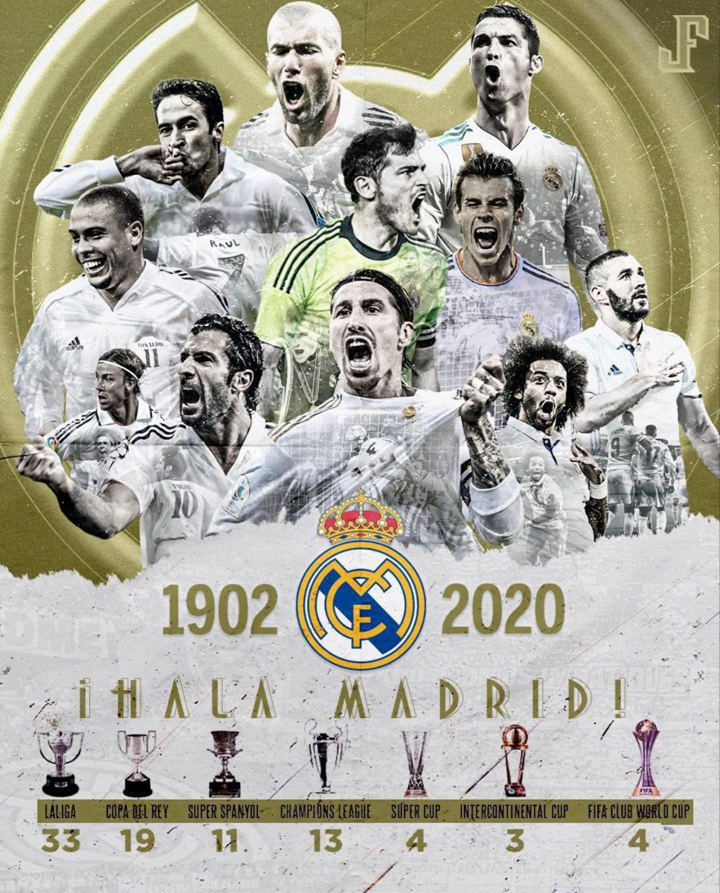

Ali Abo Rashed
Wie ben ik?
Mijn naam is Ali. Mijn verjaardag is op 28 February 2001. Ik ben 21 jaar oud en mijn ouders zijn van palestijns afkomst, maar ik ben in syrië geboren. Op dit pagina gaat u veel over mij horen. Bijvoorbeeld gaat u zien wat mijn hobby’s zijn en nog veel meer.

Hobbies
Wat ik leuk vind om te doen is gamen in mijn vrije tijd of buiten gaan voetballen met mijn team of met mijn vrienden. Naar voetbal kijken is ook mijn hobby ,want door de spanning blijft de wedstrijd leuk om naar de kijken. Mijn favoriete voetballer is CR7 en mijn favoriete team is Real Madrid.
Motivatie opleiding
Ik krijg mijn motivatie voor deze opleiding door mijn vader. Want mijn vader werkt zelf met telefoons en computers. Hij werkt ook hardware en software. Ik heb deze opleiding gekozen omdat ik zelf alles met computers en software leuk vind om te doen. Met deze opleiding kan je veel doen en het is later nodig in de toekomst.
Mijn ideale rooster
Mijn ideale rooster is vrij zijn. Maar dat is geen goed antwoord. Dus ik ga beginnen met de eerste les. Ik vind dat school moet beginnen om 11 of 10 uur. Dan kan ik genoeg slaap krijgen. En ik vind dat de school moet eindigen om 15 of 16 uur. Ik vind dat tussen elk les minimaal een pauze van 15 minuten moet zijn. Ik vind dat de lengte van de les maximaal 60 minuten moet zijn, maar dat is gewoon mijn mening.